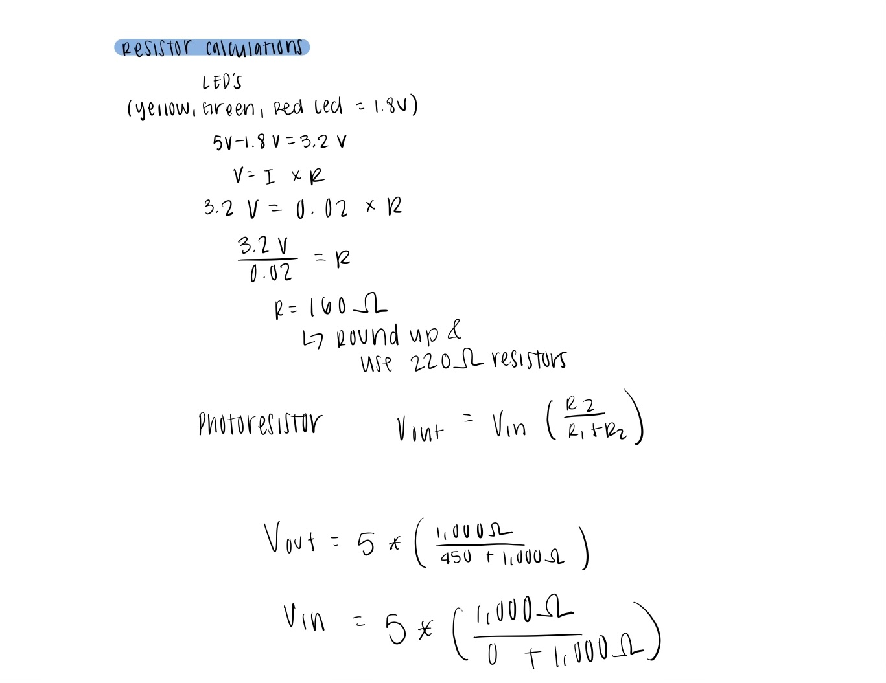
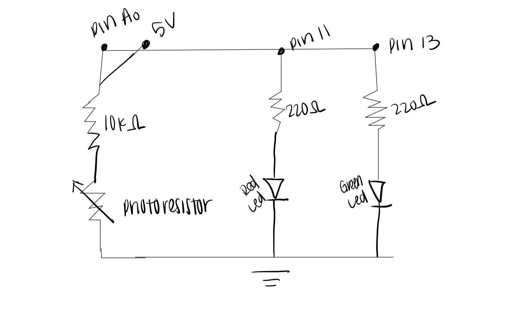
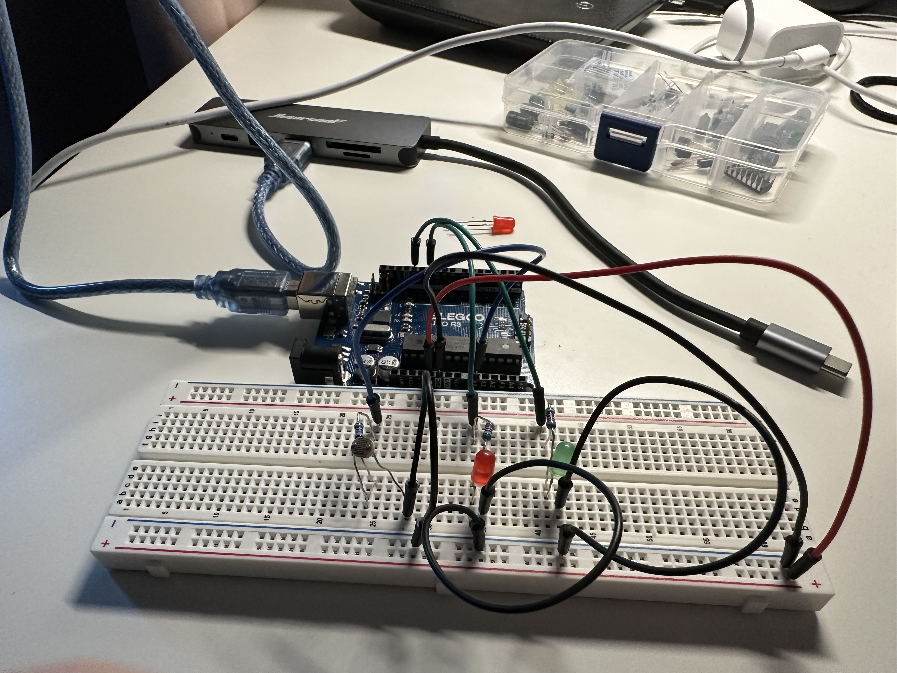

Assignment 3 Input Output!
Calculations!

Schematic:

Circuit:

Arduino Code:
// The pin of the red LED
const int redPin = 11;
// The pin of the green LED
const int greenPin =13;
// The analog input pin that is attached to the photoresistor
const int analogInPin = A0;
// Reads and stores the value of the photoresistor
int sensorValue = 0;
// The PWM value for the red LED
int redOutputValue = 0;
// The PWM value for the green LED
int greenOutputValue = 0;
void setup() {
// Set the red LED pin as an output
pinMode(redPin, OUTPUT);
// Set the green LED pin as an output
pinMode(greenPin, OUTPUT);
// initialize serial communication at 9600 baud
Serial.begin(9600);
}
void loop() {
// Reads the analog input value
sensorValue = analogRead(analogInPin);
// Prints the sensor value to the Serial Monitor to check the reading
Serial.print("Sensor value: ");
// Prints the value of 'sensorValue' to the Serial Monitor in a new line
Serial.println(sensorValue);
// maps the photoresistor value to PWM range for the LED
// The brightness for the red LED
redOutputValue = map(sensorValue, 0, 1023, 0, 255);
// Constrains the value of redOutputValue to be between 0 and 255.
redOutputValue = constrain(redOutputValue, 0, 255);
// maps the photoresistor value to PWM range for the LED
// The brightness for the green LED
greenOutputValue = map(sensorValue, 0, 1023, 255, 0);
// Constrains the value of greenOutputValue to be between 0 and 255.
greenOutputValue = constrain(greenOutputValue, 0, 255);
// if the sensor is not being triggered, sensor value is less than 200
if (sensorValue < 200) {
// Turn off the red LED by writing 0 to the redPin
analogWrite(redPin, 0);
// Turn off the green LED by writing 0 to the greenPin
analogWrite(greenPin, 0);
} else {
// If the sensor is triggered it set's the red LED to redOutputValue
analogWrite(redPin, redOutputValue);
// Set the green LED to greenOutputValue
analogWrite(greenPin, greenOutputValue);
}
// print the results to the Serial Monitor:
Serial.print("sensor = ");
// print the current value of sensorValue to the Serial Monitor
Serial.print(sensorValue);
// print the "red LED output = " to the Serial Monitor
Serial.print("\t red LED output = ");
// print the current value of redOutputValue to the Serial Monitor with a new line
Serial.println(redOutputValue);
// print the "green LED output = " to the Serial Monitor
Serial.print("\t green LED output = ");
// Print the current value of greenOutputValue to the Serial Monitor with a new line
Serial.println(greenOutputValue);
// wait 10 millisecond before the next loop
delay(10);
}